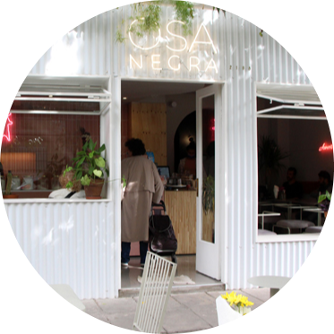

¿Qué podés encontrar?
Variedad de recetas y restaurantes aptos para celíacos, con la posibilidad de ajustar la búsqueda a tus gustos. Además, vas a poder comunicarte con otras personas, compartir consejos y experiencias.
¿Sabes lo que es la contaminación cruzada?
La celiaquia es una reacción inmunológica ante la ingesta de glúten, una proteína presente en el trigo, la cebada y el centeno. Y como sabemos lo difícil que es encontrar que comer, en este sitio vas a encontrar diferentes opciones, además de encontrar restaurantes que no tengan la posibilidad de una contaminación cruzada, es decir que un alimento que no contenga gluten igual puede contaminarse por estar en contacto con otros alimentos que lo contengan o bien, por utilizar los mismos utensilios para cocinar o manipularlos, sin higienizarlos correctamente.


Restaurantes